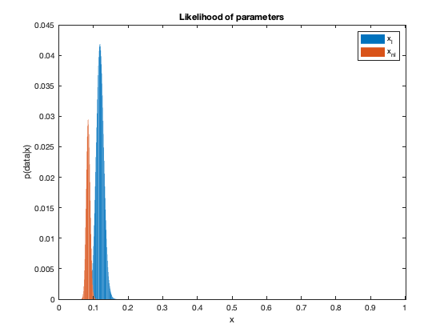
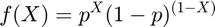
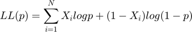
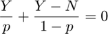
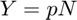
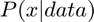
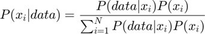
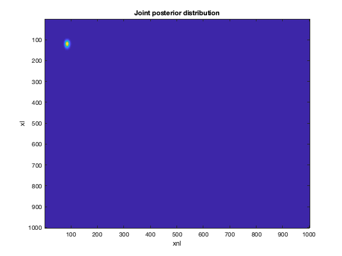

Contents
clear; close all; clc;
a)
We are given that the conditional probability of activation given language and the conditional probabilty of activation given no language both follow a Bernoulli distribution. Since each experiment follows a Bernoulli distribution, the total set of studies would follow a Binomial distribution with N = total and X = activations observed for each condition. Using binopdf, we can then compute the likelihood of the range of parameters 0 to 1.
lang_total = 869; lang_activ = 103; nolang_total = 2353; nolang_activ = 199; xl = 0:0.001:1; xnl = 0:0.001:1; lang_likelihood = binopdf(lang_activ, lang_total, xl); % Likelihood of xl for language nolang_likelihood = binopdf(nolang_activ, nolang_total, xnl); % Likelihood of xnl for no language fig1 = figure(); bar(xl, lang_likelihood, 'DisplayName', 'x_l'); hold on; bar(xnl, nolang_likelihood, 'DisplayName', 'x_{nl}'); xlabel('x') ylabel('p(x|obs)') title('Likelihood of parameters') legend()
b)
The paramter that maximizes each distribution can be computed by finding the index for maximum in each likelihood and then checking the index at the corresponding location in the parameter set.
lang_max_index = find(lang_likelihood == max(lang_likelihood)); % Index of maximum lang likelihood nolang_max_index = find(nolang_likelihood == max(nolang_likelihood)); % Index of maximum nolang likelihood lang_maxlikelihood_pred = xl(lang_max_index) % The parameter value at maximum for language nolang_maxlikelihood_pred = xnl(nolang_max_index) % The parameter value at maximum for no language
lang_maxlikelihood_pred =
0.1190
nolang_maxlikelihood_pred =
0.0850
The pdf of a Bernoulli random variable (X) can be written as:

where, X = 0 or 1 in this case no language or language.p^X(1-p)^(1-X)
The likelihood function then becomes:

The log-likelihood function can be obtained by taking the logarithm of both sides. Thus,
Therefore,
Therefore,

Let
Therefore,
The aim is to compute the maximum likelihood estimation. Hence we are interested in the value of p for which the derivative of LL(p) equates to 0.
Therefore,
Therefore,

Therefore,

Therefore,

Therefore,
Therefore,
In our example, Y is the active instances and N is the total instances for each condition. Computing the estimated maximum likelihoods:
lang_maxlikelihood_estim = lang_activ/lang_total nolang_maxlikelihood_estim = nolang_activ/nolang_total
lang_maxlikelihood_estim =
0.1185
nolang_maxlikelihood_estim =
0.0846
c)
The next step is to compute 
Using Bayesian formula, we have:

The denominator can be obtained as a dot product between the likelihood and px for each condition. The posterior can then be computed as an element-wise product between the likelihood and px and the dividing the result by the denominator computed. Here, since the prior is uniform, we have:
px = (1/length(xl)) * ones(1, length(xl)); lang_denom = lang_likelihood * px'; nolang_denom = nolang_likelihood * px'; lang_posterior = (lang_likelihood .* px) / lang_denom; % Posterior for language nolang_posterior = (nolang_likelihood .* px) / nolang_denom; % Posterior for no language fig2 = figure(); plot(xl, lang_posterior, 'DisplayName', 'x_l'); hold on; plot(xnl, nolang_posterior, 'DisplayName', 'x_{nl}'); xlabel('x') ylabel('p(obs|x)') title('Posterior distributions') legend()
The cumulative posterior distributions can be obtained by summing all the posterior distributions upto the given parameter index. The cumulative posterior distributions will be monotonically increasing functions from 0 to 1.
lang_cumulative = zeros(1, length(xl)); % Initializing language cumulative nolang_cumulative = zeros(1, length(xl)); % Initializing no language cumulative for i = 1:length(xl) if i == 1 lang_cumulative(i) = lang_posterior(i); nolang_cumulative(i) = nolang_posterior(i); else lang_cumulative(i) = lang_cumulative(i-1) + lang_posterior(i); nolang_cumulative(i) = nolang_cumulative(i-1) + nolang_posterior(i); end end fig3 = figure(); plot(xl, lang_cumulative, 'DisplayName', 'x_l'); hold on; plot(xnl, nolang_cumulative, 'DisplayName', 'x_{nl}'); xlabel('x') ylabel('sum p(obs|x)') title('Cumulative Posterior Distributions') legend()
Next we are to compute the upper and lower bounds for 95% confidence interval about the mean. The upper bound will be set by cdf having a value of 0.975 and the lower bound will be set by the cdf having value of 0.025. Therefore, we are interested in finding the first value in the posterior that will result in cdf having value greater than 0.975. This will be the upper bound. Similarly, we are interested in finding the last value in the posterior that will result in cdf having value lesser than 0.025. This will be the lower bound.
lang_low_index = find(lang_cumulative < 0.025, 1, 'last' ); lang_up_index = find(lang_cumulative > 0.975, 1 ); nolang_low_index = find(nolang_cumulative < 0.025, 1, 'last' ); nolang_up_index = find(nolang_cumulative > 0.975, 1 ); lang_low_limit = lang_posterior(lang_low_index) lang_up_limit = lang_posterior(lang_up_index) nolang_low_limit = nolang_posterior(nolang_low_index) nolang_up_limit = nolang_posterior(nolang_up_index)
lang_low_limit =
0.0052
lang_up_limit =
0.0046
nolang_low_limit =
0.0075
nolang_up_limit =
0.0111